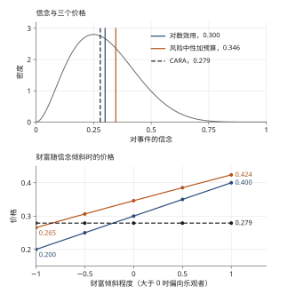

第 18 章 价格隐含概率与风险溢价
在 Intrade 这家合约按事件是否发生来支付的交易所上，Page 与 Clemen（2013）研究了 2002 年 8 月至 2007 年 2 月间开张的市场。他们发现，距到期时间比较短时，这类市场校准（calibration）得还算好，价格与事件发生的频率相符，而对更远的未来的事件，价格有显著的偏差。
Page 与 Clemen 还检验了这个偏差能否用来交易。他们按开始日期把市场分成前后两半，从前一半的校准曲线（calibration curve）里得出两个简单的策略；在后一半上，策略 A 的平均收益为 5.25%，策略 B 为 9.55%。15% 的贴现率抵消 A 的全部收益，25% 的贴现率抵消 B 的全部收益；本章把这些贴现率称为盈亏平衡贴现率（break-even discount rate）。作者说不清，是交易者的贴现率很高，所以不存在系统性的机会，还是贴现只抵消了收益的一部分。他们说 15–25% 有些偏高，何况他们的简单策略低估了可获得的利润，并补充说，实证研究发现个人的贴现率可以相当高。这些数字的适用范围见 18.3 节的边界框（scope box）。
同一个价格与频率之间的差距，因此可以是占用在合约里的资金的成本，可以是承担风险的报酬，也可以是一个错的价格（本书的判断）。1.7 节把价格是哪一种概率留给了本章：它报告的是谁的概率，其中哪一部分是风险溢价（risk premium）。18.1 至 18.5 节去掉对数效用（log utility），18.6 至 18.10 节去掉与总体风险无关（fact unrelated to aggregate risk）这一条，两条都是根模型（root model）的默认；18.2 和 18.3 节还去掉无摩擦交易（frictionless trading），方式是禁止卖空交易（short sale），并计入资金成本（funding cost）、费用和价差，18.4 节去掉外生交易对手（exogenous counterparty），它的财富变成内生（endogenous）的，18.6 节去掉贝叶斯更新（Bayesian updating），同时去掉与总体风险无关这一条（5.8 节的表 5.1）。1
18.1 价格报告谁的信念
1.3 节与 5.3 节给出了 Wolfers 与 Zitzewitz（2006）的结果：对于价格接受者（price taker），如果事件只通过合约影响他们的财富，所以没有人为对冲而交易，并且他们具有对数效用，那么价格是财富加权平均信念（wealth-weighted average belief），因为对数效用使需求对信念成线性（工作论文版）。
Manski（2006）的模型 5.7 节描述过，他取风险中性（risk neutrality）的价格接受者，他们只在意期望收益，信念各不相同，信念的分布连续，预算与信念在统计上独立。他写道，在这些假设下，唯一的均衡（equilibrium）价格解他的方程 (1)，用本书的字母，以 表示价格、 表示一个交易者的信念，写作 （工作论文版）。价格等于认为事件比价格所说的更可能发生的交易者所占的份额，所以它位于信念的第 百分位，这是 Wolfers 与 Zitzewitz 的说法（工作论文版）。
于是价格只把平均信念限定在一个区间内，从 到 （工作论文版）。如果预算与信念相关，他的条件成立的对象由交易者的总体换成成交的美元的总体，他的区间此时界定的是按预算加权的平均信念（工作论文版）。
常绝对风险厌恶（constant absolute risk aversion，CARA）刻画这样一种交易者：他对一个给定风险的厌恶不随财富改变。具有 CARA 效用时，Wolfers 与 Zitzewitz 的合约需求，用本书的字母，是 ， 是绝对风险厌恶系数；财富不进入需求，风险厌恶（risk aversion）只改变斜率（工作论文版）。在本书的推导里，只要没有交易者的财富限制他的头寸，合约的净供给为零，每个人的 相同，市场出清（market clearing）就使价格的对数几率（log-odds）等于交易者对数几率的平均，不论财富怎样分布； 不同时，等于按风险容忍度（risk tolerance） 加权的平均；CARA 只把财富从需求里拿走，所以风险容忍度与信念相关时，价格仍会变动（本书的推导）。
Manski 写道，对于风险厌恶的交易者，价格取决于信念、预算与风险偏好的联合分布（工作论文版；16.1 节）。在 Wolfers 与 Zitzewitz 自己选定信念分布和效用的数值例子里，价格在 0.20 美元与 0.80 美元之间时，价格与平均信念的差距一般很小，它的符号随效用函数而变，信念越分散，它越大（工作论文版）。对于风险厌恶程度低于对数效用的交易者，他们在认为事件接近 50–50 时交易得特别积极，在信念对称分布时，两种力量表明价格偏向二分之一，若平均信念准确，这意味着热门与冷门的偏差（favorite–longshot bias），即冷门获胜的次数比价格所示的少；对于风险厌恶程度更高的交易者，Wolfers 与 Zitzewitz 预期价格偏向零或一，可能出现反向的热门与冷门偏差（工作论文版）。
图 18.1 把三种情形放在同一组信念上，这组信念是 Beta(3, 7) 分布，一个定义在 0 到 1 上的标准分布族，均值为 0.30，也就是 1.3 节那份药物合约的价格。财富与信念无关时，对数效用给出均值 0.300；风险中性加预算给出 0.346，比中位数（median）0.286 更接近二分之一；每个人风险厌恶程度相同的 CARA 给出 0.279（本书的计算）。当每个交易者的财富与他的几率（odds） 的幂成正比，幂从 −1 取到 1，小于 0 时财富偏向悲观者，大于 0 时偏向乐观者，对数效用的价格从 0.200 到 0.400，风险中性的价格从 0.265 到 0.424，而 CARA 的价格保持在 0.279（本书的计算）。

三种偏好读取同一组信念的不同统计量，一个加权均值、一个分位数和一个对数几率的平均，所以只有说明了效用的类别，以及财富是否与信念相关，“市场的概率”才有确定的含义（本书的判断）。根模型的价格规则以财富相等且固定的对数效用为基础（5.3 节），本书在这里把它去掉。2
18.2 价格的区间
3.7 节从无套利律（no-arbitrage law）出发，定义了价格隐含概率（price-implied probability），即价格给各个结果的概率。在无摩擦的市场里，Harrison 与 Kreps（1979）证明，每一个索取权都由套利定价，且模型可行，当且仅当存在唯一的等价鞅测度（equivalent martingale measure），也就是 3.7 节描述过的那一组定价概率；按本书的读法，只有可交易的证券能复制关于世界状态（state of the world）的每一个事件时，价格隐含概率才是唯一的（本书的判断；3.7 节）。
摩擦使这个联系更松。如果定价规则不是线性的，即存在市场摩擦的情形，Jouini 与 Kallal（1995b）证明，可能存在无穷多条背后的无摩擦定价规则，即使是完备市场（complete market），这些规则对已交易的索取权也不必一致。在禁止卖空时，Jouini 与 Kallal（1995a）证明，动态交易可以复制的索取权不一定由套利定价，可接受的价格构成一个区间，这是不知道交易者偏好时能得到的最紧的界。两篇论文都只允许简单策略，给每个人同一个信息结构（information structure），并且按本书的读法，认为价格不因交易而移动（本书的判断；3.7 节）。因此，只有在市场完备且无摩擦时，价格隐含概率才是唯一的（本书的判断）。
单只股票给出的更少（1.3 节）：它的价格是定价概率下的期望值，要读出整个分布，需要一种对每个事件分别下注的证券（本书的判断）。根模型的二元合约（binary contract）对它的两个结果各提供一个下注，所以按构造是完备的（5.4 节）；18.4 节说明完备性对财富有什么作用。
对于二元合约，3.7 节和数学框 3.2 给出了一个区间，在每个人的信念相同、占用的资金不赚利息、所有交易者的贴现相同时，区间内没有人交易；这两处还给出了 Kalshi 上最优的 Yes 与 No 报价之和超过 1 美元。任何使用 的人都必须说明它取在区间的什么位置，是中点，还是某一方成交的价格（本书的判断）。1.5 节与 5.3 节要求，在把校准差距读作信念与价格之间的差距之前，先扣除资金成本、费用和买卖价差（bid–ask spread），根模型的无摩擦交易把这些略去了；18.3 节做这件事。
因此，价格隐含概率与正确模型下的概率可以因为三个原因不同：风险溢价、与正确信念不同的信念，以及资金成本、费用和价差一类的摩擦（本书的判断）。读作一种摩擦，开头的盈亏平衡贴现率是对占用资金的补偿，但只有交易者真的把未来贴现得那么陡才成立，而这一点 Page 与 Clemen 说不清。3
18.3 怎样读校准曲线
如果按某个价格成交的合约平均得到的结果等于这个价格，Page 与 Clemen 就把这个价格叫作校准的，用他们的字母是 ， 是合约的最终价值，1 或 0；本章用 表示价格。校准曲线 给出每个价格上的平均结果。设 如数学框 1.1 里那样，表示在定价者已见到的信息下，正确模型给出的概率。价格属于他们已见到的信息，所以 也是价格为 的合约上 的平均。相对熵（relative entropy），即 为真时按这个价格下注的代价（1.4 节），是凸的，所以信息梯度（information gradient）的第二项 在价格为 的合约上的平均至少是 （本书的推导；数学框 18.1）。
这个下界有三点限制（本书的推导）。它界定的是同一价格上合约的平均，单个市场的 可以更小。由有限样本估计的校准曲线使右边平均而言偏大，所以测得的值只在抽样误差之内才是下界。价格校准，即 ，是第二项为零的必要条件，并不表明它已经为零：同一价格上的定价偏高与定价偏低可以互相抵消。这个下界只用价格和过去的结果，所以是对公共信息（public information）的一种读法（本书的判断）。
以奈特（nat）计，奈特是用自然对数度量的信息单位，约合 1.44 比特（bit），按每次合约结算计，所列价格上的下界在 Intrade 上，0.20 处为 0.0074，0.80 处为 0.019，用的是 1.3 节的频率（本书的计算）。对于 Kalshi，Bürgi、Deng 与 Whelan（2026）把结果减价格对价格作回归，用他们的字母是 ，结果与价格都以美分计，赢的合约支付 100，得到 ，（工作论文版）。这些单位是本书的读法，因为论文别处把结果写成 0 或 1（本书的判断）。这条线在 5 美分和 95 美分处给出约 0.003 奈特，在 20 美分和 80 美分处给出 0.0003 至 0.0004，比 Intrade 在同样价格处的小约 20 到 60 倍（本书的计算）；一条直线只给出一个量级（order of magnitude）（本书的判断）。
这些差距包含摩擦（本书的判断）。Page 与 Clemen 自己的解释就是一种：对占用在合约里的资金没有利息的交易者，在信念接近价格时不入场。Kalshi 上的一笔交易吃掉的是挂单方（maker）挂出的报价（17.10 节），所以按成交价格度量的校准，部分地包含了价差（本书的判断），而费用使保本所需的获胜次数比价格所示的更多（1.3 节）。在把一个差距读作还没想明白的信息（undigested information）之前要扣除多少，取决于对利率和费用的估计（本书的判断）。
第 15 章与第 17 章把成交量的度量留给了本章。在 Polymarket 上，直接加总的成交量（naive volume），即把每笔交易加起来，高估换手（turnover），即真正易手的价值， 倍， 是该市场的发行与换手之比（issuance-to-turnover ratio）（17.9 节）。在 Tsang 与 Yang（2026）表 5 的 249 个与选举有关的市场里，这个倍数的第 10 百分位为 2.39，中位数为 3.57，第 90 百分位为 8.44，最大值为 50.2，在稀薄而年轻的市场里最大。在对数效用下，价格按交易者的财富加权（18.1 节），新的头寸以净流入（net inflow）的形式进来，Tsang 与 Yang 把它与换手分开；直接加总的成交量使市场看起来比实际更活跃、更深（本书的判断）。
适用边界 这些数字来自三个平台上的三个样本：Intrade，开张于 2002 年 8 月至 2007 年 2 月的市场；Kalshi，2021 年至 2025 年 4 月，只用收盘前最后 10 天的价格；Polymarket 在 2024 年美国总统选举中的 Trump 市场，以及上面的成交量倍数用到的 249 个与选举有关的市场。Kalshi 的研究是工作论文，Polymarket 的研究是预印本。这些相对熵是校准曲线在所列价格上的逐点值，按每次结算、以奈特计，Kalshi 的来自一条直线，只给出一个量级。它们包含资金成本和费用，所以并不全是错价（mispricing）；每个值从下方界定它所对应的价格上合约的信息梯度第二项的平均，单个市场的这一项可以更小，这个下界只在抽样误差之内成立；对价格求平均需要价格的分布，对持有 年的合约，放弃的利息 要先扣除（本书的推导）。贴现能解释多少差距，取决于交易者的信念分散到什么程度，这一点没有人观察到，在每年 20% 左右的贴现率下，贴现不能解释收盘前 10 天内的差距（本书的推导）。成交量必须按换手计，因为直接加总的成交量高估换手 倍。17.9 节的边界框讲了 Polymarket 上的价格冲击（price impact）。4
18.4 财富演化与市场选择
4.3 节把市场选择（market selection），即靠交易淘汰错误的信念，留给了本章，并给出 Blume 与 Easley（2006）的结果：贴现因子（discount factor）相等时，信念最接近真相的人最终拥有全部资源，所以只要市场是完备的，市场选出的就是正确的信念，而在市场不完备时，这些结论可能不成立（工作论文版）。作者补充说，一开始就假定有某个交易者持有正确的信念，限制了完备市场结果的意义（工作论文版）。
在各期状态从同一个分布中独立抽取的情形里，Blume 与 Easley 定义了一个生存指数（survival index），度量交易者生存的潜力，它等于他的贴现因子的对数减去真相相对于他的预测的相对熵；贴现因子相同时，指数最大的交易者，是预测在相对熵上最接近真相的那些人（工作论文版）。在本书的推导里，对完备市场中两个对数效用的交易者，他们按自己的信念押注每种只在一个状态下支付的证券，价格从他们财富之比的对数的变化里消掉，这个变化每期的期望是两人生存指数之差；相对风险厌恶相同时，对风险的态度决定选择的速度；选择的方向不受它影响（本书的推导；数学框 18.2）。
对于两个最终都学到真相的贝叶斯学习者，Blume 与 Easley 证明，更有耐心的那个存活下来，不论各自要学的参数有多少个：在独立的情形里，要学的参数个数的差别以 的量级起作用，贴现因子的差别以 的量级起作用（工作论文版）， 是期数。因此，财富流向更准确的人，是一个关于贴现因子相等的完备市场的结果：贴现因子不等时，耐心可以压过准确，市场不完备时，这个流向可以逆转（本书的判断）。
作者的两个例子显示了这种逆转。在不完备的市场里，一个对某项资产在某个状态下的收益过于乐观的交易者，可以选择储蓄得足够多，多到不仅抵消他不正确的预期造成的糟糕资产配置，还有余；在他们这个储蓄效应（savings effect）的例子里，交易者 1 的信念正确，交易者 2 的信念不正确，交易者 1 的财富与消费仍收敛到 0，他们写道，这清楚地表明效用最大化与生存脱节（工作论文版）。即使储蓄行为相同，组合效应（portfolio effect）也可以让不正确的信念存活，甚至兴旺，因为相对熵与资产结构不能很好地对应（工作论文版）。这是两位作者构造的两个例子，用了特定的效用和参数（本书的判断）；他们认为，在认真对待异质性的经济模型里，市场不完备是自然的假设（工作论文版）。
根模型里的交易对手出于信息以外的原因交易，是从外部给定的；这里噪声交易者（noise trader）的财富是内生的。Blume 与 Easley 写道，De Long 及其合作者在 1990 与 1991 年的两篇论文里，论证了不理性地过度自信的噪声交易者可以在价格由外生设定的资产市场里取得支配地位（工作论文版）。在 1990 年的论文里，乐观的噪声交易者把很大一部分财富投到风险资产上，只要承担风险得到回报，他们的预期收益就高于老练的投资者，虽然预期效用较低，这是在一个两期模型里，这个模型无法处理他们财富积累的效应（工作论文版）。De Long 等人用预期收益判断适应度，Blume 与 Easley 用财富的长期份额；当价格对噪声交易者的交易作出反应时，他们是否存活，需要一个财富会演化的模型（本书的判断）。
Blume 与 Easley 写道，选择的时间尺度（time scale）由交易的频率决定，并且在交易频率很高的金融市场里，长期很快就会到来，这是合理的（工作论文版）。本书把这个尺度读作由信息实现的频率设定，因为把同一股信息流切成更短的交易期，会使每期的相对熵按比例变小（本书的判断）。在完备市场里，一个对数效用的交易者，对真实概率为 0.5 的事件给出 0.55，面对耐心相同的正确交易者，每次结算约损失 0.005 奈特，约 138 次结算后他的相对财富减半，而 0.96 与 0.95 的贴现因子每期相差约 0.0105（本书的计算）。5
18.5 价格与资金的分布
在对数效用下，价格按财富给信念加权，在风险中性下，它数预算的美元，人头不在其内（18.1 节），所以在这些情形里，它偏向持有资金的人的信念（本书的判断）。Tsang 与 Yang 对 Polymarket 2024 年 10 月的记录显示，新进的资金可以多么集中。他们称为大户（whale）的那位大交易者通过四个账户交易，10 月买入 2660 万美元的 Trump YES 敞口，占当月为 Trump 市场提供资金的 1.764 亿美元净流入的 15.1%；把每个账户按 10 月的净买入排序、并排除做市商（market maker）后，最大的账户净买入 1700 万美元，占当月净流入的 9.6%，前五名占 31.1%，前二十名占 50.7%。
资金从两边进来。把 Biden 与 Harris 的市场合并为民主党一方，作者发现，它每天的 YES 净流入与 Trump 的净流入之间的 90 天滚动相关系数，从 10 月 6 日到宣布结果为止一直在 0.8 以上，他们把当月的资金流读作“与异质的信念相符”，在他们看来，异质的信念比单边的操纵更能说明这些资金流。这是一个市场在一个月里的情形，一个地址不等于一个人，论文也没有检验是否有人为了左右别人的信念而交易（15.3.5 节）。在对数效用下，或在风险中性加预算下，价格反映的是资金怎样分布，这可以不同于人怎样分布（本书的判断）。
持仓的集中是另一个量。Kuśmierz 与 Overko（2022）用线性回归得到 Zipf 系数（Zipf coefficient），即余额随排名下降的指数，也就是对数坐标上斜率的负值，回归用的是最大的 30、50 和 100 个地址，并在他们的样本上取平均，样本从每条链的第一个区块起，到 2022 年 1 月 16 日止；比特币前 100 名的系数是 0.787。两位作者写道，他们的数据并不代表个别持有人的财富，只代表财富在钱包之间的分布，而且一个用户可以持有多个钱包。
按本书的读法，前 100 个地址描述的是托管机构（custodian），如交易所的冷钱包，以及大额持有人，而在第 11 章 Cong、Li 与 Wang 的采用模型里，价格由名单另一端的边际用户（marginal user）决定，他决定是否持有，必须单独测量；把地址当作人，在两端的错法相反，因为一个托管机构的地址汇集了许多用户，而一个用户的多个钱包使小持有人的数目虚高（本书的判断）。第 19 章讨论信息与资金的错配。6
18.6 梯度里的风险溢价
从这里起，本章去掉与总体风险无关这一条，在这一条之下，信息梯度的第二项 纯粹是错价（数学框 1.1）；4.2 节把风险溢价，即为承担整个市场的风险所要求的额外收益，留给了本章。
Ross（2015）写道，风险中性的状态价格（state price），即各只在一个状态下支付的索取权的价格，是风险厌恶，即定价核（pricing kernel），与自然概率（natural probability）分布的乘积，自然概率就是市场自己的预测（工作论文版）。对于代表性主体（representative agent），即一个其选择代表市场选择的单个投资者，定价核是贴现因子乘以下一状态与当前状态的边际效用之比，边际效用即多一单位消费的价值（工作论文版）。以 表示市场的信念， 表示按 下均值为一作了标度的定价核，价格隐含概率是 ，所以风险溢价表现为一个随状态而变的 （本书的推导；数学框 18.3）。
数学框 1.1 列出了第二项的拆分，（本书的推导）。第一项度量市场的信念离正确概率有多远，即错价；第二项是风险溢价项（risk-premium term），在 下计算。如果市场的信念正确，，第一项为零， 全是风险溢价，不会为负；如果 ，第二项可以为负（本书的推导；数学框 18.3）。
Milgrom 与 Stokey（1982）的定理 3 取这样几项：严格风险厌恶、效用连续可微的主体；在对每个状态的索取权的竞争市场上有一轮事前交易，使他们处于帕累托最优（Pareto optimal）的配置，即没有任何改变能在不伤害别人的情况下使某人更好，在这个配置里每个主体对每种物品都持有正的数量；以及论文关于先验的条件 (3)，也就是 4.4 节的信念一致（concordant beliefs）。于是，任何支持这一配置的事后均衡价格，即使不完全揭示，其相对变化也与禀赋、效用函数、先验信念和初始配置无关，当市场在消息发布之前和之后都开放时，揭示信息的是相对价格的变化。按本书的读法，在这些前提下，价格隐含概率的变化度量消息，受风险溢价的干扰比水平值（level）少，水平值带着边际效用（本书的判断）。
当本章也去掉贝叶斯更新时，即先验不同或处理消息的规则有偏，与总体风险无关这一条不再足以使价格隐含概率等于概率。一个充分条件是，定价者的信念等于正确概率，并且他们在每个关于世界状态的事件下的预期边际效用相同；它只是充分条件，因为信念的误差与边际效用的差别可以互相抵消（本书的推导）。第 16 章讨论了从价格中学习。7
18.7 实测超额收益里有什么
实测超额收益（measured excess return），即实际观察到的高于无风险利率的收益，可以含有来源和前提各不相同的几个部分。表 18.1 列出九个（本书的判断）。表中的“风险溢价”取广义，指对承担风险的补偿，包括与总体风险无关的子项，而狭义，即为承担整个市场的风险所要求的额外收益（18.6 节），是标准的用法（本书的判断）。
表 18.1 实测超额收益的几个部分
| 部分 | 它是什么 | 本书里的例子 | 节 |
|---|---|---|---|
| 风险溢价 | 对承担风险的补偿：对与总体风险相联系的结果，包括随时间变化的风险和宏观风险；按本书的读法，还包括对噪声交易者风险（noise trader risk）的补偿，De Long 等人所说的价格偏低就在其中，对专门从事套利的资本所承担的特质风险和资金风险的补偿，在资本不足时对吸收供给冲击（supply shock）的补偿，以及认知溢价（investor recognition premium），即很少投资者知道一只股票、必须在他们之间承担它的公司特有风险时要求的较高收益，这四项与结果随总体风险怎样变动无关（本书的判断） | Bernard 与 Thomas 对 beta 和五个因子的检验；De Long 等人的噪声交易者；Shleifer 与 Vishny（1997；第 16 章和第 23 章）；指数剔除，据 Duffie 的转述；Merton（1987；10.3 节和 19.3.2 节） | 18.6, 18.8, 18.10 |
| 信息租（information rent） | 私人信息租（private information rent），来自还没有传开的消息，以及处理租（processing rent），来自看到了但还没有想明白的消息 | 盈余公告后漂移（post-earnings-announcement drift），读作处理租（本书的判断） | 18.10 |
| 选择效应（selection effect） | 幸存者偏差（survivorship bias）与比索问题（peso problem），即样本里没有出现的灾难；只出现在已实现的收益里 | Biais 等人的罕见灾难；Bernard 与 Thomas 的条件 (2) | 18.7, 18.9, 18.10 |
| 失窃补偿（compensation for theft） | 对持有物遭窃的风险所要求的收益 | Biais 等人的黑客攻击 | 18.7 |
| 摩擦 | 资金成本、费用，以及价差中扣除逆向选择（adverse selection）部分后的余额，读作要求收益（required return）之内的补偿，或读作其他部分最多能捕获多少的一个界（本书的判断） | Page 与 Clemen 的盈亏平衡贴现率；Kalshi 的费用；Bernard 与 Thomas 的有界漂移 | 18.2, 18.3, 18.7 |
| 逆向选择补偿（adverse-selection compensation） | 不知情者预期输给知情者的收益 | Glosten 与 Milgrom 的命题 6 | 18.7 |
| 反馈收益（feedback return） | 通过移动价格而改变现实决策所得的收益 | Goldstein 与 Guembel（2008；16.8 节）里不知情的卖空者（short seller），据 Bond、Edmans 与 Goldstein 的转述 | 18.7 |
| 减去交易便利（trading convenience） | 持有的好处，它们降低要求收益 | Biais 等人的交易性好处 | 18.7 |
| 高估（overvaluation） | 当 时是负的部分：对平稳（stationary）的高估 ，利率为 ，如果正确价值本身不赚超额收益，则平均每持有一单位、每期为 （本书的推导）；用来补偿噪声交易者风险的价格偏低属于第一行（本书的判断） | 第 20 章 | 18.7 |
这张表只说明实测超额收益可能含有哪些部分；每一部分都必须只数一次，大小要单独估计（本书的判断）。按本书的读法，风险溢价这一行进入梯度的第二项，途径是其中的风险溢价项，即 18.6 节的 ，它是为承担风险付的钱；没有人能把它学掉，所以它不是信息上的优势（本书的判断）。在 De Long 等人自己的模型里，人人都知道这个事实，价格偏低出现在转售价值里，在关于这个事实的梯度之外（本书的判断；18.8 节）。
逆向选择补偿自成一行。在 Glosten 与 Milgrom（1985）的命题 6 里，贴现率代表预期持有期收益加上不知情者预期输给知情者的收益。按本书的读法，即使价格隐含概率等于概率，这一部分也属于要求收益，它既不同于风险溢价，也不同于知情者收取的信息租（本书的判断）。
价格还可以改变它们所定价的东西。在 Goldstein 与 Guembel（2008）的模型里，一位投机者意识到，如果她把股价压下去，即使没有信息，经理也可能取消一项投资，降低公司价值，让她从空头头寸中获利（据 Bond、Edmans 与 Goldstein 的转述；工作论文版；16.8 节）。按本书的读法，价格一旦反馈到现实决策，信息租就不再是从外部给定的（本书的判断）；4.7 节给出了 Bond、Edmans 与 Goldstein（2012）的综述中的两种效率。
高估以负号进入。把价格写成正确地加权了全部信号的价值，加上一个平稳的高估 。如果正确价值的客观期望超额收益为零，比如结果与总体风险无关时，那么持有人的客观期望超额收益，按每持有一单位、每期的货币计，在利率为 时平均为 ，因为高估的那一部分背后没有现金流；否则这一部分叠加在正确价值的风险溢价之上（本书的推导；数学框 18.3）。当且仅当 时它为负，这里用到的来源都没有给出 的分布（本书的判断）。按本书的读法，它出现在人与人之间的差别学不掉、卖空又受限制的地方，即第 20 章的机制（本书的判断）。在 De Long 等人的模型里，如果噪声交易者赚得比老练的投资者更高的期望收益，资产的平均价格就必定低于它的基本面（fundamentals）价值（工作论文版）；本书把这种价格偏低只数一次，算作对噪声交易者风险的补偿（本书的判断）。
摩擦以两种方式进入，一是作为要求收益之内的补偿，这是开头的盈亏平衡贴现率的读法，二是作为其他部分最多能捕获多少的一个界（本书的判断）。Bernard 与 Thomas（1989）发现，盈余公告后漂移以约 5%、4.3% 和 3% 为界，分别对应小、中、大公司，这与 Stoll 与 Whaley 的证据一致，即交易成本（transaction cost）与公司规模成反比（据 Bernard 与 Thomas 的转述）。读作一个界，摩擦不加在其他部分上，价差中为逆向选择付的那一部分属于它自己的一行（本书的判断）。
Cong、Li 与 Wang（2021）把平台生产率的波动率设为 200%，这给出了它在物理测度（physical measure），即实际结果的概率之下的大部分增长：用他们的字母，以 表示平台生产率，那里的漂移是 ， 时它是 202%（工作论文版），其中风险调整 占 200 个百分点（本书的计算）。他们承认，0.67 的相关系数 似乎与一些研究不一致，那些研究发现加密货币的收益与传统资产的收益和宏观经济因素之间的相关性很低，并论证他们的冲击捕捉底层的技术或平台质量，直接的收益冲击不在这个冲击之内（工作论文版）。Biais 等人（2023）在风险中性下校准他们的模型，他们写道，这很可能无碍，因为 2010 至 2018 年比特币的市值只占总财富的一小部分；在他们的方程 (52) 里，收益必须补偿投资者的崩盘（crash）、交易成本和黑客攻击，再减去交易性好处，已实现收益与预期收益之间的楔子可能反映一次罕见的灾难，如崩盘，即比索问题（工作论文版）。8
按本书的读法，两篇论文把高收益分给了表 18.1 的不同部分，一篇分给风险溢价，另一篇分给风险中性下对崩盘的补偿，这在幸存者的样本里表现为选择效应；风险溢价要求收益随消费或市场因子一起变动，而崩盘补偿要求平均收益随资产无事故的时间越长而下降（本书的判断）。第 11 章给出了 Cong、Li 与 Wang 的采用机制。9
18.8 没有信息的超额收益
超额收益并不表明有人掌握信息（本书的判断）。在 De Long 等人的模型里，带着错误而随机的预期的噪声交易者，使理性主体持有的一种资产产生资本利得与损失的可能，这种资产本身不带基本面风险，因而变得有风险（工作论文版）。老练的投资者不会持有它，除非得到补偿，补偿的是噪声交易者转为看跌、价格下跌的风险，而且即使基本面没有不确定性，噪声交易者也可以影响价格（工作论文版）。模型里的主体活两期，寿命更长时，均衡更接近基本面均衡；作者补充说，在有基本面股息风险时，即使终止日期已知，它的定性性质仍然成立（工作论文版）。
按本书的读法，这里的超额收益补偿的是他人将来的看法造成的转售价格里的风险，与结果怎样随总体风险变动无关；它是表 18.1 里风险溢价的子项之一，背后的错价出现在转售价值里，在信息梯度之外（本书的判断；1.3 节）。
指数剔除是本书关于纯粹供给冲击的例子。Duffie（2010）的图 1 涵盖 1990 年 12 月至 2002 年 7 月间标准普尔 500 指数的 61 次剔除，从公告到生效平均约 7.5 天。Chen、Noronha 与 Singhal（2004）对一个类似的数据集发现，剔除出指数的股票在公告日下跌约 8%，到生效日又下跌 6%，并且负面效应在生效日之后 60 天完全消失（据 Duffie 的转述）。
数学框 1.1 把这类冲击的读法留给了本章。剔除不带有关于现金流的消息，所以信息梯度的第一项为零；一旦去掉与总体风险无关这一条，价格变动落在风险溢价里，是对资本不足时吸收供给冲击的补偿（本书的判断）。它与信息租的区别在于会反转（reversal）：缓慢的信息给出朝结果方向的持久漂移，缓慢的资本给出反转（本书的判断）。对消息的过度反应（overreaction）之后也会反转，如 1.1 节的 EntreMed 案例，所以反转排除持久的信息租，但不能证明有供给冲击（本书的判断）。12.6 节给出了 Duffie 的预先宣布的供给。10
18.9 恢复定理与它的前提
Ross（2015）的恢复定理（recovery theorem）把由期权隐含的状态价格分解为定价核和自然概率，从而只凭状态价格确定市场对收益的预测和它的风险厌恶（工作论文版）。他在工作论文里陈述的前提如下（工作论文版）。
- 存在一个代表性主体，这是他的分析所维持的一个假设；在市场完备、效用不依赖状态且对时间可加可分时，它是唯一的，它的核只取决于未来消费与当前消费之间的边际替代率，即下一状态与当前状态边际效用之比经贴现后的值。
- 状态服从一个时间齐次的过程，在有限多个状态上取值。
- 定价矩阵是正的或不可约的，每个状态都可以从其他每个状态到达；这时自然概率、贴现率和核存在唯一的正解。
- 无风险利率允许依赖状态；各状态下固定时，唯一的自然密度就是风险中性密度本身，所以只有利率依赖状态时，恢复才说出新的东西。
- 必须知道转移价格的完整矩阵，虽然并没有丰富的期权远期市场，转移也不能直接观察到。
- 状态是对与市场未来演化有关的一切的完整描述，而他的例子只用价格水平来识别状态，他认为在相对较短的时期里可以这样做。
唯一性并不检验这些前提。Ross 在证明里指出，存在性来自价格是按这种方式生成的这一假设，而他的解表明，即使价格不是这样生成的，解也存在（工作论文版）。Perron–Frobenius 定理给任何不可约的非负矩阵一个所有分量为正的唯一特征向量，所以一个唯一的解并不说明这些前提是否成立（本书的判断）。
定理恢复出来的是市场的信念。Ross 把它叫作市场对收益分布的主观评估（工作论文版），所以它是 18.6 节记号里的 ； 仍然没有识别，错价项 仍需要对 的独立估计（本书的推导；数学框 18.3）。Ross 本人要求仔细审视恢复的边界，特别是不依赖状态的核存在这一假设是否稳健（工作论文版）。
不同的信念和不同的知晓程度对这些前提构成压力。在一个完备市场里，对数效用的交易者共有同一个贴现因子、信念各不相同，状态价格就是一个代表性主体的状态价格，这个主体持有财富加权平均信念（本书的推导）。财富份额随结果变动（18.4 节），所以这个主体的信念随状态漂移，核也许不再取一个不依赖状态的效用那种可分的形式（本书的判断）。根模型的状态包含知情比例（informed fraction），即听到消息的人所占的份额，只用指数水平定义的状态把它投影掉了（本书的判断）。
Ross 的例子用的是 2011 年 4 月某一天的标准普尔 500 期权价格（工作论文版）。历史自助法（bootstrap）给出六个月内下跌超过 32% 的概率为 .0008，即 5000 次自助中有 4 次，而恢复出的密度给出 1.2%（工作论文版）。Ross 写道，这只是一个粗略的初步结果，“意在提示；它并不打算成为定论”（工作论文版）。按本书的读法，这个差距可能是因某个前提不成立而留下的风险溢价、状态价格估计中的误差（Ross 看到了它的迹象；工作论文版）、错价，或历史样本里没有出现的灾难，即选择效应，而恢复定理分不清这几种（本书的判断）。本书没有用这个例子做自己的计算。11
18.10 选择、风险溢价与风险检验
Blume 与 Easley 写道，在动态完备的市场里，所有交易者有共同的贴现因子，如果有一个交易者的信念正确，那么从长期看，所有资产都将按这个交易者的偏好和他的正确信念定价（工作论文版）。按本书的读法，在这三个前提之下，即动态完备的市场、共同的贴现因子和一个信念正确的交易者，选择去掉错价，留下风险溢价：价格里的信念误差趋向零，价格则保留幸存者对风险的态度，所以 趋向风险溢价项，一般在零以上；没有正确的交易者时，信念误差只缩小到最准确的幸存者的误差（本书的判断）。
第 12 章描述过 Bernard 与 Thomas 的样本和漂移，他们逐一检验了盈余公告后漂移的风险解释。要使 beta，即一只股票对市场的敏感度，解释这个漂移，盈余意外最有利与最不利的公司之间的 beta 之差必须是 2.6，而实际是 0.21。他们没有发现证据表明这个策略的收益与五个宏观经济风险因子中的任何一个显著相关。他们只有在以下三个条件中至少有一个成立时，才能使证据与没有充分控制风险相调和：1974–86 年损失之少，相对于更长的时期极不寻常；溢价补偿的是罕见而灾难性的损失，这 13 年里一次也没有发生；或者损失落在这样的时期，那时财富下降 1 美元比平均每增加 1 美元重要 28 倍。他们认为第一和第三个条件不合理，并指出没有证据支持第二个条件。
按本书的读法，第二个条件就是比索问题，13 年的样本不能排除它；交易费用以 18.7 节的漂移之界进入；信息部分剩下的属于对公共信息的处理，即处理租，这里没有私人信息租的位置（本书的判断）。这与作者的读法相符，第 12 章给出过这一读法，即他们的结果与这样一个市场相符，这个市场没能认识到当前盈余对未来盈余的全部含义。12
18.11 本章引用的实证证据
- 测量。 Page 与 Clemen 的 Intrade 市场，开张于 2002 至 2007 年；Bürgi、Deng 与 Whelan 的 Kalshi 数据，2021 年至 2025 年 4 月（工作论文版）；Tsang 与 Yang 对 2024 年选举的 Polymarket 记录；Kuśmierz 与 Overko 到 2022 年 1 月的地址余额；Bernard 与 Thomas 的 1974 至 1986 年的 NYSE 与 AMEX 公司；Duffie 的标准普尔 500 指数 61 次剔除；Ross 2011 年某一天的期权价格，一个例子（工作论文版）。
- 只通过别人的转述知道的。 Chen、Noronha 与 Singhal 对剔除出指数的股票的收益（据 Duffie 的转述）；Goldstein 与 Guembel 的模型（据 Bond、Edmans 与 Goldstein 的转述；工作论文版）；Stoll 与 Whaley 的交易成本（据 Bernard 与 Thomas 的转述）；De Long 等人 1991 年的论文（据 Blume 与 Easley 的转述）。
- 模型、论证与计算。 其余的一切，其中很多读的是工作论文或手稿，如本章文献所写。图 18.1，以及 18.3 节的奈特，是本书的计算，数学框里标为本书所做的各步是本书的推导。
18.12 交易者的自查清单
这些问题没有一个说该买什么、卖什么，答得好也不能让一笔交易变得安全（本书的判断）。
- 谁的钱和什么偏好定下了这个价格？ 核对：对没有理由对冲的价格接受者，价格在对数效用下是财富加权平均信念，在预算与信念无关的风险中性下是信念的一个分位数，在 CARA 下财富从需求里消失（工作论文版）；对图 18.1 的信念，财富与信念无关时，三者从 0.279 到 0.346（本书的计算；18.1 节）。
- 价格取在区间的哪个位置？ 核对：有资金成本、费用和价差时，即使在完备市场里，价格隐含概率也只能限定到一个区间，如 Jouini 与 Kallal 的模型，它们用简单策略、一个信息结构和不因交易而移动的价格，所以要说明 是中点还是成交价（本书的判断；18.2 节）。
- 校准差距清除了摩擦吗？ 核对：一条校准曲线只从下方、并在抽样误差之内界定每个价格上信息梯度第二项的平均，单个市场的这一项可以更小，它的差距包含资金成本和费用，价格校准是那一项为零的必要条件，并不表明它已经为零（本书的推导；18.3 节）。
- 这笔超额收益会不会是风险溢价、选择效应或摩擦？ 核对：把表 18.1 一部分一部分过一遍，每一部分只数一次；在短样本里，比索问题不能排除（本书的判断；18.7 节和 18.10 节）。
- 价格的变动会反转吗？ 核对：按本书的读法，纯粹的供给冲击通过风险溢价移动价格，并会反转，而缓慢的信息朝结果漂移；对消息的过度反应也会反转（本书的判断；18.8 节）。
18.13 小结
- 对没有对冲动机（hedging motive）的价格接受者，价格在对数效用下是财富加权平均信念，在预算与信念无关的风险中性下是信念的一个分位数，在 CARA 下财富从需求里消失（工作论文版）；对同一组信念，三个价格各不相同（本书的计算），在对数效用下或带预算时，价格跟随资金的分布，这可以不同于人的分布（本书的判断；18.1 节和 18.5 节）。
- 价格隐含概率只在完备、无摩擦的市场里才是唯一的；在 Jouini 与 Kallal 的模型里，用简单策略、一个信息结构和不因交易而移动的价格，有交易费用时它不必唯一，即使市场是完备的，禁止卖空时它只能限定到一个区间（本书的判断；18.2 节）。
- 在抽样误差之内，校准曲线从下方界定每个价格上合约的信息梯度第二项的平均，单个市场的这一项可以更小，这个下界包含资金成本和费用，价格校准是那一项为零的必要条件，并不表明它已经为零（本书的推导；18.3 节）。
- 在 Blume 与 Easley 的模型里，市场完备、贴现因子相等时，财富流向信念最接近真相的人，在他们不完备市场的例子里，它流向错误的信念（工作论文版）；在市场动态完备、贴现因子共同、有一个交易者信念正确的地方，选择去掉错价，风险溢价留在价格里（本书的判断；18.4 节和 18.10 节）。
- 一旦去掉与总体风险无关这一条，第二项拆成 ，即错价加一个风险溢价项，市场的信念正确时，这个风险溢价项不会为负（本书的推导；18.6 节）。
- 按本书的读法，实测超额收益可以含有九个部分，每一部分只数一次，逆向选择补偿自成一行，高估在其平均为正时是负的部分；超额收益本身不表明有信息，纯粹的供给冲击的价格变动会反转，像 Bernard 与 Thomas 那样逐一检验风险解释，在短样本里仍留下比索问题（本书的判断；18.7 节、18.8 节和 18.10 节）。
- Ross 的恢复定理在若干前提下把定价核与市场的信念分开，这些前提包括一个效用对时间可分、不依赖状态的代表性主体，一个在有限多个状态上的时间齐次过程，以及，要得到风险中性以外的答案，一个依赖状态的无风险利率；它恢复出来的是市场的信念，他用一天数据的估计只是一个例子（工作论文版；18.9 节）。
18.14 写给量化读者的数学框
数学框 18.1 校准下界的符号形式
Page 与 Clemen 的校准，用他们的字母，对价格 是 ；本框以 表示价格，并定义 。其余是本书的推导。在 且 属于 时，，所以 。对固定的 ， 是凸的，所以 对 求平均，得到 。一个由有限样本得到的、对 无偏的估计 ，由同一个凸性，使 平均而言偏大。当 只知道到一个区间时，必须说明取的是哪一点。 只说明右边为零。13
数学框 18.2 完备市场里的相对增长
Blume 与 Easley 的生存指数（工作论文版），用本书的字母是 ， 是真相， 是交易者 的预测。其余是本书的推导。在完备市场里，对数效用的交易者 每期消费财富的 份额，其余按他的信念 的比例花在每种只在一个状态下支付的证券上。无风险总收益为 ，状态价格标度成概率 ，他在状态 之后的财富是 。对交易者 1 和 2， 和 消掉： 它在 下的期望是 。相对风险厌恶系数相同时，他们消费之比按 除以这个系数的速率变化。市场不完备时，相对熵不再度量这一点；用作者的话说，这些度量并不一致（工作论文版）。
数学框 18.3 第二项的拆分
核与自然概率的乘积沿用 Ross（工作论文版）；其余是本书的推导。设 为价格隐含概率， 为市场的信念，，所以 。对任意 ， 如果 ，第一项消失，第二项是 ，由 Jensen 不等式；如果 ， 可以为负。在它的前提下，恢复定理给出 和 ，并由它们只得到 ，即市场自己看来的风险溢价项； 需要独立的 。
高估。如果价格是正确价值 加上一个平稳的 ，它不付现金流，也没有预期变化，并且 的客观期望超额收益为零，那么持有人每单位、每期的期望超额收益是 ，利率为 。
本章文献
本章引用的文献。所读版本不是期刊版的，条目里写明读的是哪个版本；尾注里的页码按所读的版本。
- Bernard, V. L., and J. K. Thomas (1989). Post-Earnings-Announcement Drift: Delayed Price Response or Risk Premium? Journal of Accounting Research 27, Supplement: 1–36.
- Biais, B., C. Bisière, M. Bouvard, C. Casamatta and A. J. Menkveld (2023). Equilibrium Bitcoin Pricing. Journal of Finance 78(2). 所读为接受稿，作为 TSE Working Paper 973 于 2022 年 2 月发布；没有核对期刊版。
- Blume, L., and D. Easley (2006). If You’re So Smart, Why Aren’t You Rich? Belief Selection in Complete and Incomplete Markets. Econometrica 74(4). 所读为 Cowles Foundation Discussion Paper 1319，2001 年 8 月；没有核对期刊版。
- Bond, P., A. Edmans and I. Goldstein (2012). The Real Effects of Financial Markets. Annual Review of Financial Economics 4. 所读为 NBER Working Paper 17719，2011 年 12 月；没有核对期刊版。
- Bürgi, C., W. Deng and K. Whelan (2026). Makers and Takers: The Economics of the Kalshi Prediction Market. CESifo Working Paper 12122，2026 年 1 月版。
- Chen, H., G. Noronha and V. Singhal (2004). The Price Response to S&P 500 Index Additions and Deletions: Evidence of Asymmetry and a New Explanation. Journal of Finance 59(4): 1901–1929. 没有读；按 Duffie（2010）的转述引用。
- Cong, L. W., Y. Li and N. Wang (2021). Tokenomics: Dynamic Adoption and Valuation. Review of Financial Studies 34(3): 1105–1155. 所读为 NBER Working Paper 27222，2020 年 5 月；没有核对期刊版。
- De Long, J. B., A. Shleifer, L. H. Summers and R. J. Waldmann (1990). Noise Trader Risk in Financial Markets. Journal of Political Economy 98(4): 703–738. 所读为 NBER Working Paper 2395，1987 年 10 月，当时的题目是 “The Economic Consequences of Noise Traders”；没有核对期刊版。
- De Long, J. B., A. Shleifer, L. H. Summers and R. J. Waldmann (1991). The Survival of Noise Traders in Financial Markets. Journal of Business 64(1): 1–19. 没有读；按 Blume 与 Easley（2006）的转述引用。
- Duffie, D. (2010). Presidential Address: Asset Price Dynamics with Slow-Moving Capital. Journal of Finance 65(4): 1237–1267.
- Glosten, L. R., and P. R. Milgrom (1985). Bid, Ask and Transaction Prices in a Specialist Market with Heterogeneously Informed Traders. Journal of Financial Economics 14(1): 71–100.
- Goldstein, I., and A. Guembel (2008). Manipulation and the Allocational Role of Prices. Review of Economic Studies 75(1): 133–164. 没有读；按 Bond、Edmans 与 Goldstein（2012）的转述引用。
- Harrison, J. M., and D. M. Kreps (1979). Martingales and Arbitrage in Multiperiod Securities Markets. Journal of Economic Theory 20(3): 381–408.
- Jouini, E., and H. Kallal (1995a). Arbitrage in Securities Markets with Short-Sales Constraints. Mathematical Finance 5(3): 197–232.
- Jouini, E., and H. Kallal (1995b). Martingales and Arbitrage in Securities Markets with Transaction Costs. Journal of Economic Theory 66: 178–197.
- Kuśmierz, B., and R. Overko (2022). How Centralized Is Decentralized? Comparison of Wealth Distribution in Coins and Tokens. 2022 IEEE International Conference on Omni-layer Intelligent Systems (COINS). 所读为 arXiv 预印本 2207.01340v1；没有核对会议版。
- Manski, C. F. (2006). Interpreting the Predictions of Prediction Markets. Economics Letters. 所读为 NBER Working Paper 10359，2004 年 3 月；没有核对期刊版。
- Merton, R. C. (1987). A Simple Model of Capital Market Equilibrium with Incomplete Information. Journal of Finance 42(3). 所读为 MIT Sloan School of Management Working Paper 1869-87，1987 年 3 月；没有核对期刊版。
- Milgrom, P., and N. Stokey (1982). Information, Trade and Common Knowledge. Journal of Economic Theory 26(1): 17–27.
- Page, L., and R. T. Clemen (2013). Do Prediction Markets Produce Well-Calibrated Probability Forecasts? Economic Journal 123(568): 491–513.
- Ross, S. A. (2015). The Recovery Theorem. Journal of Finance 70(2). 所读为 NBER Working Paper 17323，2011 年 8 月；没有核对期刊版。
- Shleifer, A., and R. W. Vishny (1997). The Limits of Arbitrage. Journal of Finance 52(1): 35–55. 所读为 NBER Working Paper 5167，1995 年 7 月；没有核对期刊版。
- Stoll, H. R., and R. E. Whaley (1983). Transactions Costs and the Small Firm Effect. Journal of Financial Economics 12(1): 57–80. 没有读；按 Bernard 与 Thomas（1989）的转述引用。
- Tsang, K. P., and Z. Yang (2026). The Anatomy of a Blockchain Prediction Market: Polymarket in the 2024 U.S. Presidential Election. 所读为 arXiv 预印本 2603.03136v3，2026 年 9 月 14 日；没有期刊版。
- Wolfers, J., and E. Zitzewitz (2006). Interpreting Prediction Market Prices as Probabilities. NBER Working Paper 12200, April 2006；没有找到期刊版。
注释
1. Page 与 Clemen（2013），期刊版：摘要里的校准结果和到期时间，第 491 页；§4.3.2 里的交叉点，第 508 页；§5 里样本的两半，第 509 页；表 2 模型 (3)，第 509 页；§5 里的两个策略、贴现率和作者的保留，第 510 页。本书的推导：他们的校准函数，方程 (10)，可以写成 ， 是价格， 是概率， 是对数几率， 设定曲线与对角线相交的位置，所以曲率参数 是价格的对数几率对事件的对数几率的斜率， 低于 1 把价格拉向交点，他们发现交点与 0.5 没有显著差别。在他们的模型 (3) 里， 对体育和政治以外的市场有常数项 0.98，政治市场低 0.33，距到期的时间每多一个单位就降低 0.001；论文没有说明这个单位，读作天（本书的判断），距到期 100 天使 降低 0.1（本书的计算：）。1.3 节给出了论文的样本和它的基本校准数字。
2. Wolfers 与 Zitzewitz（2006），NBER Working Paper 12200：§2 里的假设，第 2 页；§3 里的财富加权均值及其对对数效用的依赖，第 3 页；百分位、风险厌恶较低的交易者和两种力量在第 6 页，风险厌恶较高的交易者在第 6–7 页；数值结果在第 8 页；脚注 8 里的 CARA，第 9 页，以及表 1 里的需求，PDF 第 18 页，他们在那里用 表示 。Manski（2006），NBER Working Paper 10359：摘要里的风险中性价格接受者；§1 里的连续分布和独立的预算，第 2 页；§1 里的唯一性与方程 (1)、(2)，第 3 页；§4 里与信念相关的预算，第 9–10 页；第 10 页上的风险厌恶的交易者和联合分布。本书对 CARA 的推导：需求为 ，内部头寸且净供给为零时，，所以 是 按 加权的平均。本书对图 18.1 的推导：信念为 Beta(, )、财富与 成正比时，按财富加权的信念是 Beta(, )，所以对数效用的价格是 ，风险中性的价格解 ， 是正则化不完全贝塔函数；CARA 的价格是 处的双伽马函数减去 处的双伽马函数，再取逻辑函数，即 Beta(, ) 的平均对数几率。这些曲线来自 book/code/btc_pilot/implied_probability.py，由 book/code/btc_pilot/bookfig_ch18.py 绘制。
3. Harrison 与 Kreps（1979），期刊版：定理 2 的推论，第 392 页。Jouini 与 Kallal（1995b），期刊版：§2 里的摩擦与完备市场，第 183 页。Jouini 与 Kallal（1995a），期刊版：§1 里的复制与卖空，第 198 页；§2.1 里的可接受价格区间及其紧性，第 205 页。
4. Page 与 Clemen（2013），期刊版：§4.1 里校准的定义、方程 (7) 和 ，第 500 页；§4.2.2 里 0.20 与 0.80 处的频率，第 504 页；引言里没有利息的占用资金，第 492 页。Bürgi、Deng 与 Whelan（2026），CESifo Working Paper 12122：§3.1 里的样本期，第 10 页；§2 里收盘前的 10 天，第 4 页；§3.4 里的方程 (4)、单位与表 4 第 (1) 列，第 20–21 页。本书的计算： 和 奈特， 是两个二元分布的相对熵；Kalshi 的直线在价格为 美分时给出的频率是 ，5 美分处为 3.4%，20 美分处 18.9%，80 美分处 81.0%，95 美分处 96.5%，因此分别为 0.0029、0.00035、0.00031 和 0.0026 奈特，与 Intrade 的比值在 0.20 处约为 21，在 0.80 处约为 62。本书对贴现的推导：年率 20% 时，10 天给出 Page 与 Clemen 的 约为 1.005；在他们的模型里，按他们的命题 2（§2，第 496 页），贴现后的价格位于 与 之间， 是没有贴现时的价格，所以不论信念多分散，贴现使价格移动的幅度小于 ，约 0.5 美分，低于 Kalshi 的直线在 5 美分和 95 美分处给出的约 1.6 和 1.5 美分的差距。本书对 的推导：占用 年、利率为 的资金按对数计损失约 ，要先从增长率里扣掉它，再把剩下的读作那个界。Tsang 与 Yang（2026），arXiv 预印本 v3：摘要里的净流入、249 个市场，以及它们在稀薄而年轻的市场里最大，第 1 页；§3.3 里的比值 ，第 12 页；表 5 的 A 栏，第 35 页。
5. Blume 与 Easley（2006）读的是 Cowles Foundation Discussion Paper 1319，页码按这篇讨论稿自己的编号；没有核对 Econometrica 的版本。摘要里的不完备市场；§1 里 De Long 等人的两篇论文，第 1–2 页；帕累托最优配置、信念、完备市场、正确交易者的限制和 De Long 等人的主张，第 2 页；储蓄与不完备性，第 3 页；§3.1 里的生存指数及其最大值，第 11 页；§3.4 里 与 的量级，第 22 页；§4 里相对熵的失效，第 24 页；第 25–26 页上的储蓄例子，以及第 26 页上组合例子的引入；§5 里的时间尺度，第 28 页。De Long 等人（1990），NBER Working Paper 2395：引言里的较高预期收益，第 2 页；§II 里的较低预期效用，第 13 页；第 15 页上的财富积累。本书的计算： 奈特，，。
6. Tsang 与 Yang（2026），arXiv 预印本 v3：§6.2 里的四个账户、大户和账户排名，第 20 页；§6.3 里的民主党一方和滚动相关系数，第 21 页；摘要里的异质信念，第 1 页。Kuśmierz 与 Overko（2022），arXiv 预印本 v1：§II.A 里的钱包和样本期，第 2 页；第 4 页上的回归和表 I。
7. Ross（2015），NBER Working Paper 17323：摘要里的状态价格，PDF 第 2 页；代表性主体的核，第 8 页。Milgrom 与 Stokey（1982），期刊版：第 25 页上的定理 3；第 26 页上的方程 (7) 及其解读；§5 里的价格变化，第 26 页。本书对充分条件的推导：对处于最优的定价者，， 是边际效用，所以 且 对每个 相同时，；两个因子互相抵消时， 也可以有 。
8. Biais 等人（2023），读的是接受稿：在他们校准的崩盘信念下，崩盘可能发生的状态里每周崩盘概率为 0.07，该状态的起始概率为 0.9999202621，从 2010 年 9 月 26 日到 2018 年 12 月 23 日的 432 周里没有崩盘的概率约为 ，所以一个补偿风险中性持有人崩盘风险的价格，在没有崩盘的条件下必须上涨约 倍，几乎全部发生在 2010 至 2013 年（本书的计算）。Biais 等人把崩盘信念校准到模型所解释的同一个收益序列，所以这个倍数不是独立算出的，也不是实际价格的路径。校准值和校准的目标在表 I，第 47 页，样本在第 43 页。本书的推导：第 周的崩盘概率为 ， 是迄今没有崩盘时处于崩盘状态的概率，没有崩盘时的价格每周必须上涨 ，各周的乘积是没有崩盘概率的倒数，约为 ，。
9. Cong、Li 与 Wang（2021），NBER Working Paper 27222：附录 C 第一节里的波动率、漂移、相关系数及其辩护，第 C-2 页。Biais 等人（2023），接受稿：第 40 页上的风险中性；第 42 页上的方程 (52) 及其解读；第 50 页上已实现收益与预期收益之间的楔子。Bernard 与 Thomas（1989），期刊版：第 26 页上的有界漂移。Glosten 与 Milgrom（1985），期刊版，读的是一份扫描件，扫描件的页码加 70 即期刊页码：§4 里的命题 6，第 95–96 页。Bond、Edmans 与 Goldstein（2012），NBER Working Paper 17719：§IV.A 里 Goldstein 与 Guembel 的不知情投机者，第 16 页。De Long 等人（1990），NBER Working Paper 2395：§III 里低于基本面价值的平均价格，第 24 页。
10. De Long 等人（1990），NBER Working Paper 2395：§I 里没有基本面风险的资产，第 7 页；对风险的补偿，第 9 页；已知的终止日期，第 10 页；§II 里没有基本面不确定性的价格，第 11 页；§IV 里更长的寿命，第 29 页。Duffie（2010），期刊版：引言 §A 里的剔除，第 1238–1239 页，以及第 1239 页上转述自 Chen、Noronha 与 Singhal（2004，第 1910 页）的收益。
11. Ross（2015），NBER Working Paper 17323：摘要里的定理，PDF 第 2 页；§1 里的代表性主体与他的效用，第 5 页和第 8 页；§2 里的状态、时间齐次与依赖状态的利率，第 7 页；第 10 页上的定理 1 及其证明；第 13 页上的定理 2；§6 里的远期市场、作为状态的价格水平与日期，第 32 页，日期在那里印为 2011 年 4 月 27 日星期五，这一天实际是星期三；第 33 页上状态价格的偏差；第 34 页上下跌的概率与保留；§8 里市场的评估与核的稳健性，第 37 页。本书对代表性主体的推导：在完备市场里，对数效用的交易者共有一个贴现因子，状态价格等于一个对数效用主体的状态价格，这个主体的信念是交易者信念的财富加权平均，权重是他们当前的财富份额。
12. Blume 与 Easley（2006），Cowles Foundation Discussion Paper 1319：§5 里的长期定价，第 28–29 页。Bernard 与 Thomas（1989），期刊版：§4.2.1 里的 beta，第 17 页；§4.2.2 里的五个因子，第 18 页；第 22 页上的三个条件及其评估；§4.4 里没能认识到的市场，第 30 页。
13. Page 与 Clemen（2013），期刊版：§4.1 里的方程 (7)，第 500 页。Blume 与 Easley（2006），Cowles Foundation Discussion Paper 1319：§3.1 里的生存指数，第 11 页；§4 里的不完备市场，第 28 页。Ross（2015），NBER Working Paper 17323：摘要，PDF 第 2 页，以及第 8 页上的核。